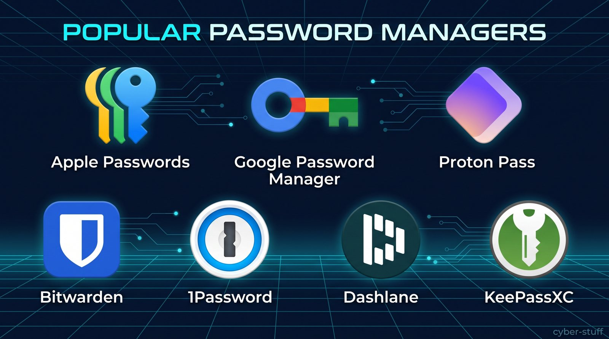

Stop Reusing Your Passwords: The 15-Minute Blueprint to Total Password Sanity
Let’s be honest: you probably use the same two or three passwords—or slight variations of them—for almost every account you own.
Maybe you added an exclamation point at the end or capitalized the first letter. It feels convenient, but here is the scary reality: when a minor site you signed up for five years ago suffers a data breach, hackers don’t just get into that site. Automated bots immediately test those leaked credentials against your email, PayPal, Amazon, and online banking accounts.
This tactic is called credential stuffing, and it happens millions of times every single day.
The good news? You don’t need a photographic memory to keep every account secure. In under 15 minutes, you can deploy a password manager and achieve complete password peace of mind.
1. Why Human Passwords Always Fail
Humans are terrible at generating true randomness. We tend to pick predictable patterns, pet names, birth years, or simple keyboard runs like P@ssword123.
Modern hacking tools can guess trillions of combinations per second using automated dictionary attacks. To stay safe against brute-force attacks, every password you use must meet three criteria:
- Unique: Never reused across two different sites.
- Long: At least 16 characters long.
- Random: Generated by software, not your brain.
Trying to memorize 50 unique 16-character passwords is impossible—which is precisely why you need a Password Manager.
2. Why Mobile Device Password Security Is Critical
We carry our entire digital lives in our pockets. From banking apps and shopping platforms to personal emails and social media, mobile devices are our primary access point to sensitive accounts.
Entering complex passwords manually on a smartphone touch screen can be frustrating, which often tempts users into picking short, simple passwords or reusing the same weak credentials. Furthermore, mobile phones are frequently used on public or unsecured Wi-Fi networks in coffee shops and airports, increasing exposure to interception attacks.
Using a password manager on your smartphone eliminates these friction points:
- One-Tap Autofill: Biometric authentication (Face ID or fingerprint scan) automatically fills complex 20+ character passwords into apps and browsers without typing.
- Instant Generator: Instantly create strong, random passwords directly inside mobile apps during account registration.
- Encrypted On-the-Go Syncing: Your credentials stay encrypted whether you are on mobile data or public Wi-Fi networks.
3. Top Password Managers Compared (Free vs. Paid)
A password manager acts as a digital vault that generates, stores, and autofills complex passwords across all your devices. All you have to do is memorize one strong master password.
Here is a breakdown of the top options, starting with the built-in and primary mobile solutions:
| Password Manager | Best For | Free Tier Features | Paid Tier Features | Advantages | Disadvantages |
|---|---|---|---|---|---|
| Apple Passwords | Apple Ecosystem Users (iOS, iPadOS, macOS) | 100% Free: Built natively into Apple OS with seamless Face ID/Touch ID autofill. | N/A (Completely free for Apple device owners). |
|
|
| Google Password Manager | Android & Chrome Users | 100% Free: Built into Google Chrome & Android OS. | N/A (Completely free with a Google account). |
|
|
| Proton Pass | Privacy-First Mobile & Desktop | Unrestricted Free Plan: Unlimited logins & devices, hide-my-email aliases. | ~$1.99–$4.99/mo: Advanced 2FA authenticator, custom vaults, unlimited email masks. |
|
|
| Bitwarden | Overall Value & Open-Source | Unrestricted: Unlimited passwords across unlimited devices. | ~$1.65/mo ($19.80/yr): Adds integrated 2FA authenticator & encrypted files. |
|
|
| 1Password | Families & User Experience | 14-day free trial (No permanent free tier). | ~$2.99/mo ($35.88/yr): Full access, travel mode, family sharing options. |
|
|
| Dashlane | All-in-One Features | No permanent free plan (Dashlane discontinued its free tier in 2025). A 14-day trial of select Premium features is available. | ~$4.99/mo: Unlimited devices, bundled VPN, dark web monitoring. |
|
|
| KeePassXC | Privacy Hardliners (Offline) | 100% Free & Open Source (No cloud, completely local). | N/A (Completely free). |
|
|

Free vs. Paid Options
- Built-in Mobile Free Tier: Apple Passwords and Google Password Manager are completely free, requiring no additional setup or subscriptions on iOS and Android devices respectively.
- Privacy Free Tier: Proton Pass and Bitwarden offer dedicated multi-platform free plans featuring zero-knowledge encryption and unlimited password storage without paywalls.
- Paid Tier: Dedicated managers like 1Password or premium tiers of Proton Pass and Bitwarden provide added security layers such as email masking aliases, travel modes, integrated 2FA authenticators, and family sharing vaults.
4. How to Create an Unhackable Master Passphrase
Your password manager is only as secure as the Master Password that unlocks it. If an attacker guesses this single password, they get everything.
Instead of a traditional complex password, use the Passphrase Method:
- Pick 4 or 5 completely random, unrelated words.
- Combine them with spaces, hyphens, or numbers.
- Bad Master Password: P@ssword2026! (Predictable and easy to brute-force)
- Strong Master Passphrase: correct-horse-battery-staple or coffee-sunset-dragon-viking-42
This creates a passphrase that is mathematically virtually impossible for a computer to crack, yet effortless for you to remember and type.
5. The 15-Minute Blueprint to Get Started
Ready to lock down your digital life? Follow these simple steps today:
- Pick Your Vault: Choose built-in solutions (Apple Passwords / Google Password Manager) for quick convenience, or standalone options (Proton Pass / Bitwarden) for cross-platform privacy.
- Create Your Master Passphrase: Write it down on a piece of paper and keep it in a safe place while you memorize it.
- Enable Mobile Autofill: Go to your phone’s settings (Settings > Passwords > Password Options on iOS or Settings > Passwords & Accounts on Android) and set your password manager as the primary autofill provider.
- Migrate Gradually: Don’t try to change all 100 passwords today! Whenever you log into a site over the next week, let the password manager save your login and prompt you to change it to a randomly generated 16+ character password.
Final Thoughts
Transitioning to a password manager is the single highest-impact security upgrade you can make. Within a few days, you’ll never have to click “Forgot Password” or worry about data breaches again.